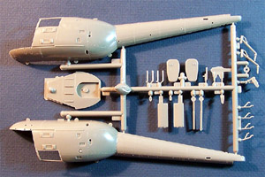
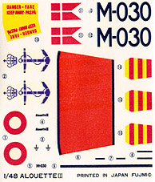

In 1957, the Aerospatiale Alouette 2, built by the French company Sud Aviation, was the first turbine-powered helicopter in the world to go into full production. The Alouette 3 series was derived from the Alouette 2 with a larger cabin, more powerful engine and improved performance. The type first flew on February 28th, 1959 as the SE.3160, and later production aircraft were designated SA. 316B.
Like the Alouette 2, the 3 has been used in a wide range of utility roles, both military and civilian. The large enclosed cabin can seat seven, all passenger seats can be removed to increase cargo space, an external sling can carry loads of up to 1,653 pounds or the helicopter can be configured in casualty evacuation role handling two stretchers and two seated medics behind the pilot. Powered by an 870shp Turbomeca Artouste turboshaft engine the Alouette 3 was a true workhorse of a helicopter.
1,450 Alouette 3's of all versions had been delivered to a number of operators in more than 90 countries by early 1984. The SA.3316B has also been built under license in India as the Chetak, and in Switzerland by F+W Emmen. Even to this day, it is still in production in Romania as IAR-316Bs. The Dutch Air force operated the Alouette III in the light helicopter role (liaison, transport, recon.) for years. Seven Alouette 3s are in service with the Irish Air Corps 302 Squadron – “Army Support Squadron” No. 3 Operations Wing. Fokker and Lichtwerk in the Netherlands assembled others. The Alouette's have been employed on a wide variety of mission types, including, Search and Rescue (S.A.R.), Air Ambulance, Security and was Aerospatiale's most successful helicopter in terms of numbers built until the mid 1980s when surpassed by the Ecureuil.
The Kit
This is an older kit manufactured by Fujimi way back in 1980. Since it is such a popular helicopter in both the military and civilian arenas I just a little surprised that this is the only 1/48 scale kit ever produced. It is a somewhat simple model with just two main trees (each packaged in a poly bag) of parts done in a slightly brittle medium gray plastic. There is a small degree of flash present but nothing difficult to clean up. 
 The interior of the cabin has a few large injector pins that must be shaved off before the rear bulkhead will fit properly. The rotor blades, both main and tail, are kind of thick and clunky in appearance. The rotor head is only minimally detailed, as is the turboshaft engine. These two areas do give you a good foundation if you want to add some wire and plastic bits to dress things up. The cabin floor has a nice texture that almost gives the appearance of carpeting. Exterior details are all raised with fine lines of rivets everywhere but then it is a helicopter so this is probably more accurate than the current tendency to make everything engraved.
The interior of the cabin has a few large injector pins that must be shaved off before the rear bulkhead will fit properly. The rotor blades, both main and tail, are kind of thick and clunky in appearance. The rotor head is only minimally detailed, as is the turboshaft engine. These two areas do give you a good foundation if you want to add some wire and plastic bits to dress things up. The cabin floor has a nice texture that almost gives the appearance of carpeting. Exterior details are all raised with fine lines of rivets everywhere but then it is a helicopter so this is probably more accurate than the current tendency to make everything engraved.
Remember, you can click on the small images to view larger pictures. Generally, the parts seem to fit together very well. I test fit the fuselage pieces (3 of them) and inserted the basic cockpit pieces and it all fell right into place. It does not look like much will be needed in the filler department, which is always a good thing on a kit filled with raised detail. The kit does include two crewmembers. They are both cast in the same neutral position and are of much better quality than any of the figures I have seen in previous Fujimi kits. There is a single small sprue of clear parts. The nose section is broken down into five separate pieces and two side windowpanes. This plastic looks to be very clear with nicely raised frame lines and rivets but the material itself is very brittle and prone to tearing. Be sure to use a razor saw and a fresh razor knife when removing these from the tree. Upon test fitting, the primary canopy pieces to the fuselage they mated very well and the model quickly takes on the look of an Alouette 3.
Taking a quick inventory of the box we have two sprues containing 79 pieces in brittle light gray plastic and 7 clear pieces packaged separately for a total of 86 pieces involved in this model.
Decals and Instructions
 The instructions consist of a single medium size fold out with four half panels printed front and back. Included here is a very brief and (I feel) inadequate historical background in three languages along with a complete parts listing. The next panel covers decal placement and a parts map. Following this are nine exploded view construction steps. These are all very nicely done with lots of construction tips and color call-outs.
The kit comes with a single small sheet of decals that are for one marking option only. Considering the wide range of services this helicopter performed in, this is a big let down. The decals that we do get seem to be nice, have good color density and print registry. This is an old model and my example has some yellowing and curling to the decals. I would suggest treating the sheet with a good decal fixative before trying to work with them – just to be safe.
Conclusions
This is a pretty neat model helicopter and definitely something different from the MiL-24s and Hueys in most collections. Considering its age, this is a fairly good quality kit. Yes, it will take a little work to bring it into the twenty-first century of modeling but that’s where the fun is. There actually is one thing out there on the aftermarket for this, a set of canopy masks from Black Magic. Considering the complex curves of the main canopy, I think I will stick (no pun intended) to thin strips of masking tape for mine. If you are into building helicopter you really should check one of these old kits out.


{kind=link}
{kind=link}